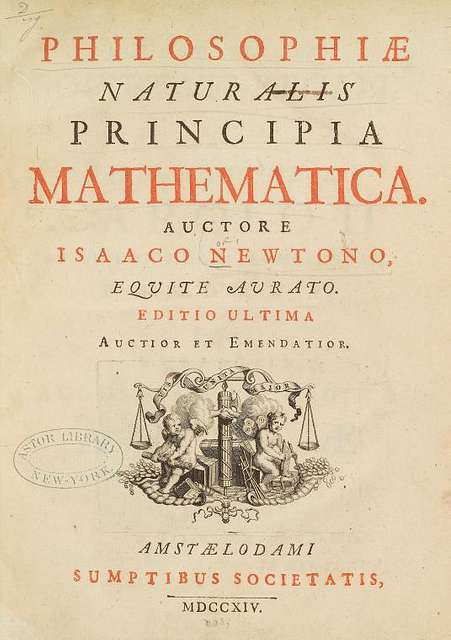

Kreisbewegungen
Das Gravitationsgesetz
Aufgabe 8
Untersuche die Anziehung zwischen Körpern und wende das Gravitationsgesetz an.
Newton und sein Werk
Isaac Newton veröffentlichte 1687 sein Werk Philosophiae Naturalis Principia Mathematica. Darin beschreibt er Bewegungen auf der Erde und von Himmelskörpern mit gemeinsamen physikalischen Gesetzen. Du kennst bereits die Zentripetalkraft: Welche Kraft kann den Mond auf seiner Bahn zur Erde hin umlenken?
Die Principia verstehen

Quelle: The New York Public Library – Digital Collections
Historischer Auszug aus Isaac Newtons Philosophiae Naturalis Principia Mathematica (§ 7 und § 9). Die historische Rechtschreibung bleibt erhalten; Auslassungen sind mit […] gekennzeichnet. Die anschließenden Erklärungen sind heutige Erläuterungen, keine Newton-Zitate.
Massen und Kräfte untersuchen
Verschiebe beide Massen und verändere ihre Werte. Beobachte, wo die beiden Kraftpfeile beginnen, wohin sie zeigen und wie sich ihre Beträge vergleichen.
Die Kreise zeigen Körper symbolisch; ihre Größe ist kein Maßstab für Dichte oder Abstand. Der Abstand r wird zwischen den Mittelpunkten gemessen. Die Pfeillängen veranschaulichen Kräfte auf einer gemeinsamen Darstellungsskala; der Zahlenwert ist entscheidend.
Das Gravitationsgesetz
Gravitation anwenden
G = 6,67430·10⁻¹¹ N·m²kg²; Erdmasse ME = 5,974·10²⁴ kg; Erdradius RE = 6370 km; 1 km = 1000 m.
Material zu den Rechenaufgaben
Material anzeigen
Für die Schnellen
Zusatzaufgaben: Wende das Gravitationsgesetz auf Mond, Mars und ein vereinfachtes Merkur-Modell an.
G = 6,67430·10⁻¹¹ N·m²kg²; 1 km = 1000 m.
Überblick und Auswertung
Die Auswertung erscheint, sobald du die Aufgaben in den Reitern 1 bis 5 bearbeitet und geprüft hast. Die Zusatzaufgaben „Für die Schnellen“ sind freiwillig.